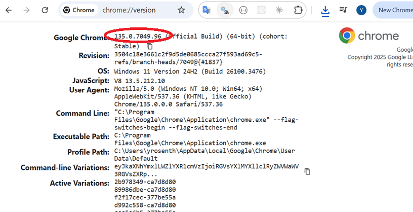

47 47. Scraping Dynamic (JavaScript) Websites
47.1 Files for the rest of this presentation
Click here to download a zip file that contains several files we will use in this presentation:
47.2 Intro to RSelenium
This is an example of a JavaScript enabled webpage.
Click here for a Word document that discusses scraping JavaScript enabled websites with RSelenium.
47.3 Tutorial Video
Most of the material on this page follows the following tutorial
RSelenium Package in R (Example) | Automate Web Browsers | Introduction & Tutorial for Beginners by Statistics Globe https://www.youtube.com/watch?v=WRjKyCZsbE4
47.4 Getting started with RSelenium
Selenium is a standalone product that can be used from Python, R and other languages as well.
RSelenium is an R package that enables the use of the Selenium product via R functions.
47.5 Setting up Selenium
47.5.1 Install Java
Selenium is actually coded in the Java language. You must install Java on your computer in order to get Selenium to work. To do so, download and install Java (i.e. the JRE to be precise) for your computer here:
47.5.2 find your version of chrome
Type this into the chrome browser
chrome://version
The version number is at the top and looks something like this:
135.0.7049.96 (Official Build) (64-bit) (cohort: Stable)
This is the result on my computer:

47.6 Example
CODE BELOW WAS TAKEN FROM HERE:
https://github.com/ggSamoora/TutorialsBySamoora/blob/main/RSelenium%20Tutorial.RTHIS IS FOR THE VIDEO THAT IS HERE
https://www.youtube.com/watch?v=U1BrIPmhx10ALSO SEE THIS VIDEO TO SETUP YOUR COMPUTER FOR USE WITH RSELENIUM
https://www.youtube.com/watch?v=GnpJujF9dBw&t=59sNOTE - ANOTHER VIDEO ON USING RSELENIUM
https://www.youtube.com/watch?v=meapZAH7Jdc
###############################################################################.
# CODE BELOW WAS TAKEN FROM HERE:
# https://github.com/ggSamoora/TutorialsBySamoora/blob/main/RSelenium%20Tutorial.R
#
# THIS IS FOR THE VIDEO THAT IS HERE
# https://www.youtube.com/watch?v=U1BrIPmhx10
#
# ALSO SEE THIS VIDEO TO SETUP YOUR COMPUTER FOR USE WITH RSELENIUM
# https://www.youtube.com/watch?v=GnpJujF9dBw&t=59s
#
# NOTE - ANOTHER VIDEO ON USING RSELENIUM
# https://www.youtube.com/watch?v=meapZAH7Jdc
###############################################################################.
# load packages
if (!require(RSelenium)){install.packages("RSelenium"); require(RSelenium)}
if (!require(wdman)){install.packages("wdman"); require(wdman)}
if (!require(netstat)){install.packages("netstat"); require(netstat)}
library(tidyverse)
selenium()
# See this for setting up RSelenium
# https://www.youtube.com/watch?v=GnpJujF9dBw&t=59s
# Doewnload the Java 8 JDK (Java Development Kit)
# Note that there are newer versions of java (current is 20).
# Nevertheless, you still want the Java 8.
#
# https://www.azul.com/freedom-from-oracle-java/?utm_content=&utm_term=azul+openjdk&utm_campaign=GS_B_Brand_EV_NAM_EN&utm_source=google&utm_medium=paid-search&_bt=649554645242&_bm=e&_bn=g&gclid=CjwKCAjwge2iBhBBEiwAfXDBR4pD8u8l5uLBCRzaYBeLxYTTvw88yPwRf2H406oMS-BE32x0mztJeRoCy5gQAvD_BwE
https://www.google.com/search?q=getting+started+with+rselenium+2023&oq=getting+started+with+rselenium+2023&aqs=chrome..69i57j33i10i160l2.5326j0j7&sourceid=chrome&ie=UTF-8#fpstate=ive&vld=cid:f6248c50,vid:GnpJujF9dBw
# Prerequisites:
#
# Get your version of Chrome by typing the following into your chrome browser
# chrome://version/. The version # is at the top of the page and should
# look something like this:
#
# Google Chrome 112.0.5615.138
# run the following to see the list of "chrome driver" versions that are
# available on your machine.
#
# NOTE Selenium seems to work better in Chrome than other browsers, especially
# Firefox. However, Just like chrome driver, there are multiple other standalone
# servers as well. Some popular ones are GeckoDriver for firefox, EdgeDriver for
# Microsoft Edge, InternerExplorerDriver for IE, SafariDriver for Safari browser
# and so on.
binman::list_versions("chromedriver")
# You should have one version that matches
# at least the first two numbers in the chrome version you have.
# If you don't have an up to date chrome driver, download it from
# here:
#
# https://chromedriver.chromium.org/downloads
#
# See this page for instructions:
# https://www.automationtestinghub.com/download-chrome-driver/
#
# You need to install the latest versions of Java Runtime Environment (JRE)
# from here: https://www.java.com/en/download/
#
#
# start the server
rs_driver_object <- rsDriver(browser = 'chrome',
chromever = '97.0.4692.71',
verbose = FALSE,
port = free_port())
# create a client object
remDr <- rs_driver_object$client
# open a browser
remDr$open()
# maximize window
remDr$maxWindowSize()
# navigate to website
remDr$navigate('https://www.ebay.com')
# finding elements
electronics_object <- remDr$findElement(using = 'link text', 'Electronics')
electronics_object$clickElement()
# go back
remDr$goBack()
# search for an item
search_box <- remDr$findElement(using = 'id', 'gh-ac')
search_box$sendKeysToElement(list('Playstation 5', key = 'enter'))
# scroll to the end of the webpage
remDr$executeScript("window.scrollTo(0, document.body.scrollHeight);")
# click on the United States filter box
us_checkbox <- remDr$findElement(using = 'xpath', '//input[@aria-label="United States"]')
us_checkbox$clickElement()
us_checkbox$refresh()
# click on the color dropdown
remDr$findElement(using = 'xpath', '//*[text()="Color"]')$clickElement()
# click on the white color
remDr$findElement(using = 'xpath', '//input[@aria-label="White"]')$clickElement()
# identify the price
prices <- remDr$findElements(using = 'class name', 's-item__price')
price_values <- lapply(prices, function (x) x$getElementText()) %>%
unlist() %>%
str_remove_all('[$]')
price_values = price_values[-33]
# convert from number to string
price_values = price_values %>%
as.numeric()
mean(price_values)
median(price_values)
# terminate the selenium server
system("taskkill /im java.exe /f")